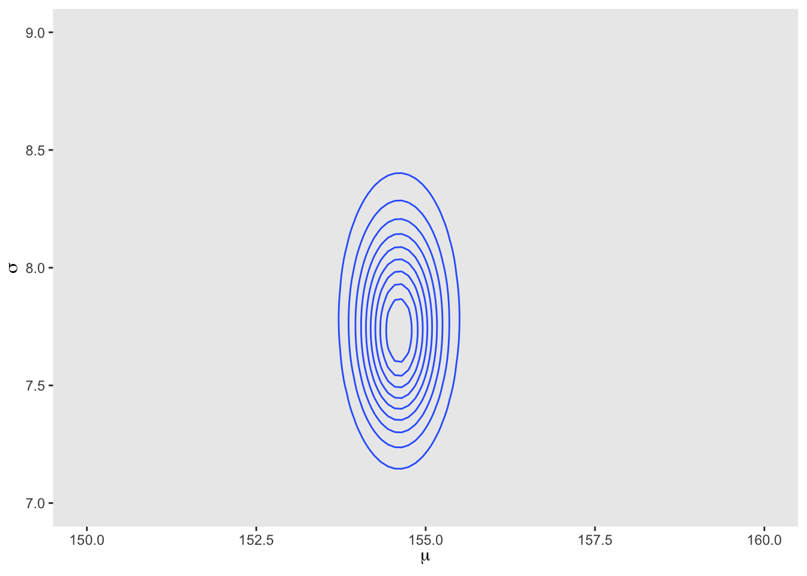
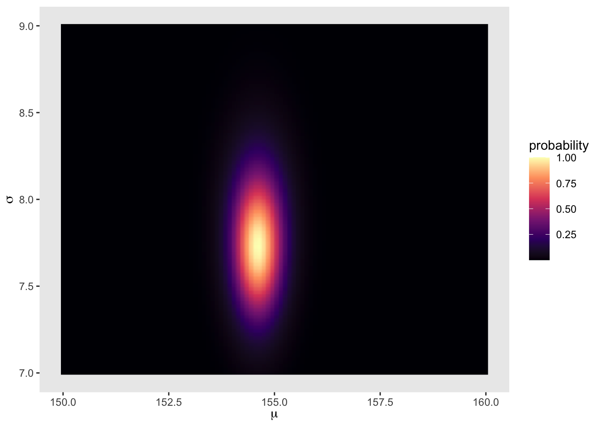
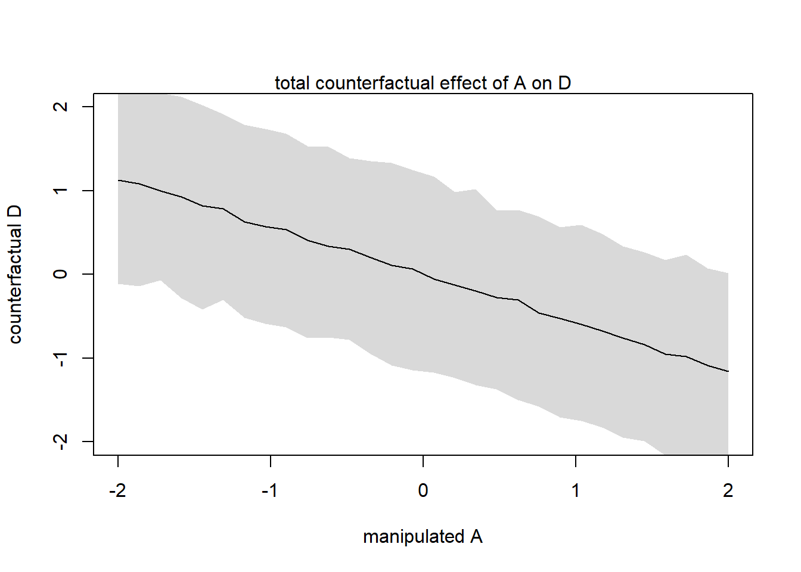

Chapter 5 The many variables & the spurious waffles
Here is why we need Multiple Regression to model outcomes.
- Statistical control for confounds
- Multiple and complex causation
- Interactions
5.1 Spurious assoiciation
Divorce rate seems to be positively correlated with marriage rate. But does higher marriage rate cause a higher divorce rate?
Divorce rate is also negatively correlated with median age at marriage meaning higher divorce rates for younger couples. But does young marriage are cause more divorce? Let’s find out
library(rethinking)## Loading required package: rstan## Loading required package: StanHeaders## Loading required package: ggplot2## rstan (Version 2.21.5, GitRev: 2e1f913d3ca3)## For execution on a local, multicore CPU with excess RAM we recommend calling
## options(mc.cores = parallel::detectCores()).
## To avoid recompilation of unchanged Stan programs, we recommend calling
## rstan_options(auto_write = TRUE)## Do not specify '-march=native' in 'LOCAL_CPPFLAGS' or a Makevars file## Loading required package: cmdstanr## This is cmdstanr version 0.5.3## - CmdStanR documentation and vignettes: mc-stan.org/cmdstanr## - Use set_cmdstan_path() to set the path to CmdStan## - Use install_cmdstan() to install CmdStan## Loading required package: parallel## rethinking (Version 2.21)##
## Attaching package: 'rethinking'## The following object is masked from 'package:rstan':
##
## stan## The following object is masked from 'package:stats':
##
## rstudentdata(WaffleDivorce)
d <- WaffleDivorce
#standardize variables
d$D <- standardize(d$Divorce)
d$M <- standardize(d$Marriage)
d$A <- standardize(d$MedianAgeMarriage)Now we can use some linear modeling skills to see how median age of marriage is related to divorce rates
\[\begin{equation}
D_{i} \sim \text{Normal}(\mu_{i}, \sigma)\
\mu_{i} = \alpha + \beta_{A}A_{i}\
\alpha \sim \text{Normal}(0, 0.2)\
\beta_{A} \sim \text{Normal}(0, 0.5)\
\sigma \sim \text{Exponential}(1)\
\end{equation}\]{i} = + {A}A_{i}
(0, 0.2)
_{A} (0, 0.5)
(1)
\end{equation}
Here \(D_{i}\) is the divorce rate in state \({i}\) and \(A_{i}\) is the median age of marriage in state \(i\). Since both the outcome and predictor are standardized in the above code, the intercept estimate (\(\alpha\)) should be somewhere near 0. But how do we interpret the slope \(\beta_{A}\)? Well if it were to be estimated as 1, then one sd increase in median age of marriage would be a 1 sd increase in divorce rate. To know the magnitude of a 1 sd change, you would have to calculate it
sd(d$MedianAgeMarriage)## [1] 1.24363sd(d$Divorce)## [1] 1.820814So if \(\beta_{A}\) was estimated to be 1, an increase of 1.2 years in median age would increase divorce by 1.82 (units?)
Let’s get the posterior of this model
m5.1 <- quap(
alist(
D ~ dnorm(mu, sigma),
mu <- a + bA * A,
a ~ dnorm(0, 0.2),
bA ~ dnorm(0, 0.5),
sigma ~ dexp(1)
), data = d
)Here is the simulated priors over 2 standard deviations
set.seed(11)
prior <- extract.prior(m5.1)
mu <- link(m5.1, post = prior, data = list(A = c(-2, 2)))
plot(NULL, xlim = c(-2,2), ylim = c(-2,2), xlab = 'Median age Marriage (std)', ylab = 'Divorce rate (std)')
for(i in 1:50){
lines(c(-2,2), mu[i,], col = col.alpha('black',0.4))
}
Now the posterior
#calculate percentiles
A_seq <- seq(from = -3, to = 3.2, length.out = 30)
mu <- link(m5.1, data = list(A = A_seq))
mu.mean <- apply(mu, 2, mean)
mu.PI <- apply(mu, 2, PI)
#plot
plot(D ~ A, data = d, col = rangi2, xlab = 'Median age Marriage (std)', ylab = 'Divorce rate (std)')
lines(A_seq, mu.mean, lwd = 2)
shade(mu.PI, A_seq)
And now the Marriage rate model
m5.2 <- quap(
alist(
D ~ dnorm(mu, sigma),
mu <- a + bM * M,
a ~ dnorm(0, 0.2),
bM ~ dnorm(0, 0.5),
sigma ~ dexp(1)
), data = d
)
#calculate percentiles
M_seq <- seq(from = -2, to = 2.8, length.out = 30)
mu <- link(m5.2, data = list(M = M_seq))
mu.mean <- apply(mu, 2, mean)
mu.PI <- apply(mu, 2, PI)
#plot
plot(D ~ M, data = d, col = rangi2, xlab = 'Marriage rate (std)', ylab = 'Divorce rate (std)')
lines(M_seq, mu.mean, lwd = 2)
shade(mu.PI, M_seq)
Comparing these two models won’t yield much useful information. We need to think about how they may interact together on Divorce rates
5.1.1 Think before to regress
We have to try and think about causal inference before we start fitting models. The best way is to create a DAG or Directed Acyclic Graph. In these graphs we can add direction of influence between variables of interest. From the graphs above, we know that both \(A\) and \(M\) influence our outcome variable \(D\). But, is there any relationship between \(A\) and \(M\)? Also note that to make these graphs, assumptions have to be made in order to make inference.
library(dagitty)
dag5.1 <-dagitty("dag{A->D;A->M;M->D}")
coordinates(dag5.1) <-list(x=c(A=0,D=1,M=2),y=c(A=0,D=1,M=0))
drawdag( dag5.1)
What this DAG says is:
1. \(A\) directly influences \(D\)
2. \(M\) directly influences \(D\)
3. \(A\) directly influences \(M\)
So there are two pathways from \(A\) to \(D\). One is the direct effect of \(A\) on \(D\), and the other is an indirect effect of \(A\) \(\rightarrow\) \(M\) \(\rightarrow\) \(D\). We saw that there is a strong negative association of \(A\) and \(D\) above in model m5.1 but we don’t know if that association is direct or entirely working through an indirect pathway. Alternatively, the effect of \(M\) on \(D\) could be entirely from \(A\)’s effect on \(M\) like this:
dag5.2 <-dagitty("dag{A->D;A->M}")
coordinates(dag5.2) <-list(x=c(A=0,D=1,M=2),y=c(A=0,D=1,M=0))
drawdag( dag5.2)
5.1.2 Testable implications
Now we have two different DAGs that we can consider their testable implications or conditional independencies. The first DAG with three arrows has every pair of variables connected by arrows. We can test this by checking their correlations with each other.
cor(d$D, d$A)## [1] -0.5972392 cor(d$D, d$M)## [1] 0.3737314 cor(d$A, d$M)## [1] -0.721096Pretty strong associations all around. In the second DAG the implication is that \(D\) could be independent of \(M\) without \(A\). Or written in mathy language \(D \perp\!\!\!\perp M|A\) which means that \(D\) is independent of \(M\) conditioned on \(A\). We can look for conditional independencies with the dagitty package.
DMA_dag2 <- dagitty('dag{D <- A -> M}')
impliedConditionalIndependencies(DMA_dag2)## D _||_ M | AIf we run this on the first three arrow DAG we won’t see an output because there are no conditional independencies in that particular model.
DMA_dag1 <- dagitty('dag{D <- A -> M -> D}')
impliedConditionalIndependencies(DMA_dag1)Because \(D \perp\!\!\!\perp M|A\) is the only implication that differs between the models, we need a model that will condition on \(A\). In other words, once we have conditioned for \(A\) (accounted for \(A\)), does knowing \(M\) add any additional information about \(D\)? The expectation from the DAG is that no there shouldn’t be.
Once we fit a mutiple regression using all 3 variables we will be able to address how much knowing \(M\) influences \(D\) and also how much knowing \(A\) influences \(D\).
5.1.3 Multiple regression notation
These will look a lot like the polynomial regressions of the last chapter.
\[\begin{equation}
D_{i} \sim \text{Normal}(\mu_{i}, \sigma)\
\mu_{i} = \alpha + \beta_{M}M_{i} + \beta_{A}A_{i}\
\alpha \sim \text{Normal}(0, 0.2)\
\beta_{M} \sim \text{Normal}(0, 0.5)\
\beta_{A} \sim \text{Normal}(0, 0.5)\
\sigma \sim \text{Exponential}(1)\
\end{equation}\]{i} = + {M}M_{i} + {A}A{i}
(0, 0.2)
{M} (0, 0.5)
{A} (0, 0.5)
(1)
\end{equation}
5.1.4 Approximating the posterior
Like models before now, we will use the quap function to approximate the posterior
m5.3 <- quap(
alist(
D ~ dnorm(mu, sigma),
mu <- a + bM * M + bA * A,
a ~ dnorm(0, 0.2),
bM ~ dnorm(0, 0.5),
bA ~ dnorm(0, 0.5),
sigma ~ dexp(1)
), data = d
)
precis(m5.3)## mean sd 5.5% 94.5%
## a -9.233966e-08 0.09707600 -0.1551463 0.1551461
## bM -6.538071e-02 0.15077301 -0.3063451 0.1755837
## bA -6.135136e-01 0.15098354 -0.8548145 -0.3722128
## sigma 7.851177e-01 0.07784332 0.6607090 0.9095263Let’s see how the slopes have changed in each model
plot(coeftab(m5.1, m5.2, m5.3), par = c('bA','bM'))
Here we see that the estimate for \(\beta_{A}\) is relatively the same between models where the estimate for \(\beta_{M}\) is much closer to 0 when considered with \(\beta_{A}\). This suggests that once \(A\) is in the model, adding \(M\) doesn’t add much more information. This is congruent with our second DAG and tells us that the first DAG is not causally correct because \(M\) no longer has a direct effect on \(D\) once \(A\) is in the model.
In case you are curious how \(A\) and \(M\) are related:
m5.4 <- quap(
alist(
M ~ dnorm(mu, sigma),
mu <- a + bAM * A,
a ~ dnorm(0, 0.2),
bAM ~ dnorm(0, 0.5),
sigma ~ dexp(1)
), data = d
)
#calculate percentiles
A_seq <- seq(from = -2.5, to = 3.2, length.out = 30)
mu <- link(m5.4, data = list(A = A_seq))
mu.mean <- apply(mu, 2, mean)
mu.PI <- apply(mu, 2, PI)
#plot
plot(M ~ A, data = d, col = rangi2, xlab = 'Median age of marriage (std)', ylab = 'Marriage rate (std)')
lines(A_seq, mu.mean, lwd = 2)
shade(mu.PI, A_seq)
5.1.5 Plotting multivariate posteriors
Once there are more than one predictor variable in the model, a simple scatterplot with a regression line and confidence intervals will not convey as much information as you would want. McElreath explains three example plots to convey more information about your multivariate models
- Predictor residual plots. These plots will show the outcome against residual predictor values.
- Posterior prediction plots. These will show model-based predictions against the observations (data).
- Counterfactual plots. These show implied predictions from imaginary experiments. They can allow you to explore causal implications of the model by manipulating variables.
5.1.5.1 Predictor residual plots
Looking again at \(A \sim M\) (m5.4) above, we can calculate the residual (difference from posterior mean) for each data point
mu <- link(m5.4)
mu_mean <- apply(mu, 2, mean)
mu_resid <- d$M - mu_mean
# rough plot (Not in book)
plot(M ~ A, data = d, col = rangi2, xlab = 'Median age of marriage (std)', ylab = 'Marriage rate (std)')
lines(A_seq, mu.mean, lwd = 2)
for(i in 1:length(d$A)){
segments(d$A[i], d$M[i], d$A[i], mu_mean[i] )
}
#plotted horizontally against Divorce rate
d <- cbind(d, mu_resid)
m5.4b <- quap(
alist(
D ~ dnorm(mu, sigma),
mu <- a + bMR * mu_resid,
a ~ dnorm(0, 0.2),
bMR ~ dnorm(0, 0.5),
sigma ~ dexp(1)
), data = d
)
reside_seq <- seq(from = -1.55, to = 1.8, length.out = 30)
mu <- link(m5.4b, data = list(mu_resid = reside_seq))
mu.mean <- apply(mu, 2, mean)
mu.PI <- apply(mu, 2, PI)
plot(x = mu_resid, y = d$D, xlab = 'Marriage rate residuals', ylab = 'Divorce rate (std)',
col = col.alpha(rangi2, 0.5))
lines(reside_seq, mu.mean)
shade(mu.PI, reside_seq)
abline(v = 0, col = 'grey50', lty = 2)
text( x = -0.2, y = 2, label = 'slower')
text(x = 0.2, y = 2, label = 'faster')
As we already found from the model, the marriage rate has little to no effect on the divorce rate, no matter how far the observation is from the expected mean.
This process can be repeated for the other predictor as well
m5.4c <- quap(
alist(
A ~ dnorm(mu, sigma),
mu <- a + bMA * M,
a ~ dnorm(0, 0.2),
bMA ~ dnorm(0, 0.5),
sigma ~ dexp(1)
), data = d
)
mu <- link(m5.4c)
mu_mean2 <- apply(mu, 2, mean)
mu_resid2 <- d$A - mu_mean2
#calculate percentiles
M_seq <- seq(from = -1.76, to = 2.85, length.out = 30)
mu2 <- link(m5.4c, data = list(M = M_seq))
mu.mean2 <- apply(mu2, 2, mean)
mu.PI2 <- apply(mu2, 2, PI)
#plot
plot(A ~ M, data = d, col = rangi2, xlab = 'Marriage rate (std)', ylab = 'Median age of marriage (std)')
lines(M_seq, mu.mean2, lwd = 2)
for(i in 1:length(d$M)){
segments(d$M[i], d$A[i], d$M[i], mu_mean2[i] )
}
d <- cbind(d, mu_resid2)
m5.4d <- quap(
alist(
D ~ dnorm(mu, sigma),
mu <- a + bMR * mu_resid2,
a ~ dnorm(0, 0.2),
bMR ~ dnorm(0, 0.5),
sigma ~ dexp(1)
), data = d
)
reside_seq <- seq(from = -1.3, to = 2.5, length.out = 30)
mu2 <- link(m5.4d, data = list(mu_resid2 = reside_seq))
mu.mean2 <- apply(mu2, 2, mean)
mu.PI2 <- apply(mu2, 2, PI)
plot(x = mu_resid2, y = d$D, xlab = 'Median age residuals', ylab = 'Divorce rate (std)',
col = col.alpha(rangi2, 0.5))
lines(reside_seq, mu.mean2)
shade(mu.PI2, reside_seq)
abline(v = 0, col = 'grey50', lty = 2)
text( x = -0.25, y = 2, label = 'younger')
text(x = 0.2, y = 2, label = 'older')
And just as the model tells us, states that have younger than the expected average age of marriage have higher divorce rates than states that have older than expected age of marriage.
5.1.5.2 Posterior prediction plots
Comparing model predictions against the observations can serve a couple purposes
- Checking to see that the model correctly approximated the posterior
- Checking to see how the model fails and if it should even be retained
Here’s how we could simulate predictions
mu <- link(m5.3) #our multivariate model of divorce rate
#summarize samples
mu_mean <- apply(mu, 2, mean)
mu_PI <- apply(mu, 2, PI)
#simulate observations
D_sim <- sim(m5.3, n = 1e4)
D_PI <- apply(D_sim, 2, PI)and then plot the results
plot(mu_mean ~ d$D, col = rangi2, ylim = range(mu_PI),
xlab = 'Observed divorce', ylab = 'Predicted divorce')
abline(a = 0, b = 1, lty = 2)
for(i in 1:nrow(d)){
lines(rep(d$D[i],2), mu_PI[,i], col = rangi2)
}
Somewhat unsurprisingly, the model is bad with extreme values (-2, 2), and does pretty well near the means.
5.1.5.3 Counterfactual plots
Here McElreath makes use of the term counterfactual in the sense of some computation that that makes use of the casual model. This is done by manipulating variables to see how the outcome would change.
The general recipe would be
1. pick a variable to manipulate
2. define a range of values for the manipulation
3. for each value of the manipulated variable, and for each sample in the posterior, use the causal model to simulate the other variables and outcome variable.
For this example we will be looking at the first DAG we came up with with the three arrows 
Let’s create the model for this example
data("WaffleDivorce")
d <- list()
d$A <- standardize(WaffleDivorce$MedianAgeMarriage)
d$D <- standardize(WaffleDivorce$Divorce)
d$M <- standardize(WaffleDivorce$Marriage)
m5.3_A <- quap(
alist(
## A -> D <- M
D ~ dnorm(mu, sigma),
mu <- a + bM*M + bA*A,
a ~ dnorm(0,0.2),
bM ~ dnorm(0, 0.5),
bA ~ dnorm(0, 0.5),
sigma ~ dexp(1),
## A -> M
M ~ dnorm(mu_M, sigma_M),
mu_M <- aM + bAM*A,
aM ~ dnorm(0, 0.2),
bAM ~ dnorm(0, 0.2),
sigma_M ~ dexp(1)
), data = d
)
precis(m5.3_A)## mean sd 5.5% 94.5%
## a -0.0000194729 0.09707615 -0.1551659 0.1551270
## bM -0.0655282376 0.15077177 -0.3064906 0.1754342
## bA -0.6135574871 0.15098333 -0.8548580 -0.3722570
## sigma 0.7851193004 0.07784372 0.6607100 0.9095286
## aM -0.0000642742 0.08825440 -0.1411119 0.1409833
## bAM -0.5783793520 0.09200708 -0.7254244 -0.4313343
## sigma_M 0.6954216151 0.07116903 0.5816798 0.8091635Now we will define our value range
A_seq <- seq(from = -2, to = 2, length.out = 30)Now we can simulate observations from this range
#prep data
sim_dat <- data.frame(A = A_seq)
#simulate M and then D, using A_seq
s <- sim(m5.3_A, data = sim_dat, vars = c('M', 'D'))and plot the predictions
plot(sim_dat$A, colMeans(s$D), ylim = c(-2,2), type = 'l',
xlab = 'manipulated A', ylab = 'counterfactual D')
shade(apply(s$D, 2, PI), sim_dat$A)
mtext("total counterfactual effect of A on D")
This plot above shows the trend in D following both paths \(A \rightarrow D\) and \(A \rightarrow M \rightarrow D\)
We can also produce the effect of \(A \rightarrow M\)
plot(sim_dat$A, colMeans(s$M), ylim = c(-2,2), type = 'l',
xlab = 'manipulated A', ylab = 'counterfactual M')
shade(apply(s$M, 2, PI), sim_dat$A)
mtext("Counterfactual effect of A on M")
Let’s raise the median age of marriage from 20 to 30 and see the change in Divorce rate (in std dev units)
#new data with mean 26.1 and std dev 1.24
sim2_dat <- data.frame(A = (c(20,30)-26.1)/1.24)
s2 <- sim(m5.3_A, data = sim2_dat, vars = c('M','D'))
mean(s2$D[,2] - s2$D[,1])## [1] -4.643447Reducing divorce by 4.5 standard deviations is probably unlikely
If we wanted to manipulate \(M\) instead of \(A\) we would have to consider a new DAG where \(A\) can’t influence \(M\) because we are controlling it.
dag5.3 <-dagitty("dag{A->D;M->D}")
coordinates(dag5.3) <-list(x=c(A=0,D=1,M=2),y=c(A=0,D=1,M=0))
drawdag(dag5.3)
Let’s set \(A\) to equal 0 and just worry about \(M\) changing
sim_dat <- data.frame(M = seq(from = -2, to = 2, length.out = 30), A = 0)
s <- sim(m5.3_A, data = sim_dat, vars = 'D')
plot(sim_dat$M, colMeans(s), ylim = c(-2,2), type = 'l',
xlab = 'manipulated M', ylab = 'counterfactual D')
shade(apply(s, 2, PI), sim_dat$M)
mtext("Total counterfactual effect of M on D")
You can see from this counterfactual that any value of \(M\) has very little effect on \(D\). We already expected this because we knew there was a weak effect in the model (bM)
coeftab(m5.3)## m5.3
## a 0
## bM -0.07
## bA -0.61
## sigma 0.79
## nobs 505.1.5.4 Simulate counterfactuals by hand
Let’s manipulate \(A\) again but simulate by hand
A_seq <- seq(from = -2, to = 2, length.out = 30)#grab samples from posterior
post <- extract.samples(m5.3_A)
# use sapply to estimate M from values in post and A_seq
M_sim <- with(post, sapply(1:30, function(i) rnorm(1e3, aM + bAM * A_seq[i], sigma_M)))# use sapply to estimate D from values in post, M_sim, and A_seq
D_sim <- with(post, sapply(1:30,
function(i) rnorm(1e3, a + bA*A_seq[i] + bM*M_sim[,i] , sigma_M)))#plot A_seq against D_sim colMeans
plot(A_seq, colMeans(D_sim), ylim = c(-2,2), type = 'l',
xlab = 'manipulated A', ylab = 'counterfactual D')
shade(apply(D_sim, 2, PI), A_seq)
mtext("total counterfactual effect of A on D")